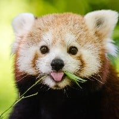
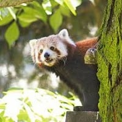
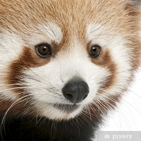
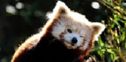

Dawniej panda ruda była zaliczana do szopowatych. Wraz z pandą wielką tworzyła niegdyś podrodzinę pandowatych w rodzinie niedźwiedziowatych. Występują one na terenach południowych Chin, północno-wsochdnich Indi, Nepalu i północną Mjanmę.
  
Panda wielka to gatunek drapieżnego ssaka z rodziny niedźwiedziowatych. Zamieszkuje ona lasy bambusowe na wysokościach od 1200m n.p.m do nawet 4100m n.p.m. Jej przynależność do drapieżników nie ulega wątpliwości, jednak w rzeczywistości odżywia się głównie bambusami, ale zdarza się, że zje rybę czy małego gryzonia. Zaliczenie pandy do zwierząt drapieżnych spowodowane jest dubową jej układu pokarmowego. jest on zbudowany jak u mięsożerców. Z tego powodu musi ona jeść nawet do 40kg dziennie, ponieważ padna trawi tylko 25% spożytego pokarmu. Przez długi czas była zaliczana do rodziny szopowatych jeko odległy krewny pandy małej, jednak badania genetyczne wykazały, że panda wielka jest spokrewniona z niedźwiedziami . Jej najbliższym krewnym jest niedźwiedź andyjski.
Pandy wielkie to duże zwierzęta, które można z łatwością rozpoznać. Mają czarne tylne i przednie łapy, czarne ramiona i kark, a także czarne uszy i czarne plamki wokół oczu. Pozostałe części ciała są białe. Panda wielka jest bardzo rzadkim zwierzęciem.
Panda mała jest dużo mniejsza, ma długi ogon i różni się przede wszystkim kolorem - jej ubarwienie jest rude / czerwone, natomiast spód ciała jest czarny / ciemnobrązowy, a na ogonie widoczne są prążki, pysk policzki i końcówki uszu są koloru białego.

{kind=link}
{kind=link}
{kind=link}